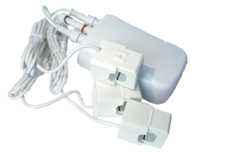

AEO_HEM3
Firmware Version : 3.56 |
 |
Kurzinfo
S Dieses Gerät ist ein Z-Wave Sensor. Drücken Sie zum Inkludieren oder Exkludieren des Gerätes den kleinen Knopf hinter der Batterieabdeckung. Das Gerät ist ein FLIRS.
Weitergehende Informationen finden sich in den jeweiligen Abschnitten dieses Handbuches.
Was ist Z-Wave?
Dieses Produkt entspricht dem Z-Wave-Standard. Z-Wave ist der internationale Funkstandard zur Kommunikation von Geräten im intelligenten Haus. Z-Wave-Geräte funken in Europa auf der Frequenz von 868.42 MHz.Z-Wave ermöglicht eine sichere und stabile Kommunikation indem jede Nachricht vom Empfänger rückbestätigt wird (Zweiwege-Kommunikation) und alle netzbetriebenen Geräte Nachrichten weiterleiten (Routing) können, wenn eine direkte Funkbeziehung zwischen Sender und Empfänger gestört ist.
Dank Z-Wave können Produkte unterschiedlicher Hersteller miteinander in einem Funknetz verwendet werden. Damit ist auch dieses Produkt mit beliebigen anderen Produkten anderer Hersteller in einem gemeinsamen Z-Wave Funknetz einsetzbar.
Z-Wave unterscheidet zwischen Controllern und Slaves. Slaves sind entweder Sensoren S, die Daten ermitteln oder Aktoren A, die Aktionen ausführen (Sensoren und Aktoren sind mitunter in einem Gerät vereint). Controller sind entweder statische netzgespeiste Controller C (auch IP-Gateways genannt) oder mobile batteriebetriebene Controller (Fernbedienungen, Batteriewandschalter)R. Damit ergeben sich eine Reihe prinzipieller Kommunikationsmöglichkeiten in einem Z-Wave-Netz:

- Controller steuern Aktoren.
- Aktoren melden Änderungen ihres Schaltzustandes
- Sensoren melden Messwerte oder Statusänderungen an Controller
- Sensoren steuern Aktoren direkt bei Ereignissen
- Aktoren steuern andere Aktoren
- Fernbedienungen erzeugen Ereignisse in einem statischen Controller, die zum Beispiel zum Steuern von Szenen genutzt werden
- Fernbedienungen steuern Aktoren
Controller können in einem Z-Wave Netzwerk zwei unterschiedliche Rollen einnehmen. Es gibt immer genau einen Primärcontroller der das Netzwerk steuert und Geräte in das Netzwerk inkludiert oder aus dem Netzwerk exkludiert. Dieser Controller kann weiter Nutzerfunktionen - zum Beispiel Tasten - besitzen. Alle anderen Controller mit Nutzerfunktionen erfüllen keine Managementaufgaben. Sie heißen Sekundärcontroller. Trotzdem verfügen sie - sozusagen als Backup - über alle notwendigen Informationen über das Netz. Das Übersichtsbild zeigt, das - batteriegestützt - Sensoren nicht direkt mit - batteriebetriebenen - Fernbedienungen kommunizieren. Sie senden nur Daten an statische Controller oder steuern Aktoren direkt.
Produktbeschreibung
Die Aeon Labs Z-Wave Stromzange ermöglicht das preiswerte Ermitteln des Gesamtstromverbrauches einer Wohneinheit. Es ermittelt die aktuelle elektrische Leistung in Watt und zählt die akkumulierte, elektrische Arbeit in kWh an zwei Phasen, die einzeln gemessen werden. Dazu werden im Schaltschrank Klappwandler an den einzelnen Zuleitungsdrähten installiert. Die Stromversorgung muss nicht unterbrochen werden. Das Gerät kann über Batterien oder ein mitgeliefertes externes 5 V Netzteil mit Mini-USB-Anschluss versorgt werden. Die Klappwandler messen prinzipbedingt den elektrischen Strom aus dem mittels eines konfigurierbaren Spannungswertes und bei Annahme von cos (phi) = 1 die Leistungs- und Arbeitsdaten. Diese können per Z-Wave abgefragt oder in konfigurierbaren Intervallen automatisch per Funk ausgesendet werden.
Der Aeon Labs Smart Energy Monitor ist ein preiswertes Gerät zum messen des Energieverbrauchs der ganzen Wohnung. Es kann mittels Funk den aktuellen Stromverbrauch und die verbrauchten kWh an eine Zentrale oder ein Gateway senden. Es kann sicher und problemlos von jedem installiert werden. Sie benötigen keinen Elektroinstallateur oder anderen Fachmann zum Aufbau des Aeon Labs Strommessgerätes. Sie müssen nicht an offenen Leitungen oder anderen Gefahrenquellen arbeiten. Mit den an den Zuleitungsdrähten des Schaltschrankes angeklemmten Klappwandlern messen Sie ganz einfach den Stromverbrauch Ihres gesamten Hauses.
Batterien
Dieses Gerät wird mit Batterien betrieben. Nur Batterien des angegebenen Typs verwenden. Niemals alte und neue Batterien im gleichen Gerät vermischen. Gebrauchte Batterien enthalten gefährliche Stoffe und dürfen nicht mit dem Hausmüll entsorgt werden!
Batterietyp: 4 * AA
Installationsanleitung
Das Z-Wave Zangenamperemeter mit drei Zangen kann an jeder trockenen Stelle in der Nähe der zu überprüfenden Elektroinstallation angebracht werden. Zur Ermittelung der elektrischen Leistung und Arbeit installieren Sie die Klappwandler einfach an den einzelnen Zuleitungsdrähten im Schaltschrank. Achtung: Bitte beachten Sie, dass die aktuelle Leistung nur bei einzelnen Zuleitungsdrähten ermittelt werden kann. Drähte, die aus mehreren Zuleitungen bestehen, müssen daher abisoliert werden und der Klappwandler nur am Hot Wire angebracht werden. Durch eine geringere Anzahl an Drähten als Klemmen wird die Funktionsfähigkeit des Gerätes nicht beeinflusst.
Das Gerät kann mit Batterien oder über das externe Netzteil mittels Mini-USB-Anschluss versorgt werden. Falls Sie den HEM über das Netzteil versorgen, entnehmen Sie dem Gerät bitte zuvor die Batterien.
Verhalten des Gerätes im Z-Wave Netz
I Im Auslieferungszustand ist das Gerät mit keinem Z-Wave-Netz verbunden. Damit es mit anderen Z-Wave Geräten kommunizieren kann, muss es in ein bestehendes Z-Wave Netz eingebunden werden. Dieser Prozess wird bei Z-Wave Inklusion genannt. Geräte können Netzwerke auch wieder verlassen. Dieser Prozess heißt bei Z-Wave Exklusion. Beide Prozesse werden von einem Controller gestartet, der dazu in einen Inklusion- bzw. Exklusion-Modus geschaltet werden muss. Das Handbuch des Controllers enthält Informationen, wie er in diese Modi zu schalten ist. Erst wenn der Controller des Z-Wave Netzes im Inclusion-Modus ist, können Geräte hinzugefügt werden. Das Verlassen des Netzes durch Exklusion führt zum Rücksetzen dieses Gerätes in den Auslieferungszustand.
Drücken Sie zum Inkludieren oder Exkludieren des Gerätes den kleinen Knopf hinter dem Batteriefach.
Bedienung des Gerätes
Es ist möglicht, die aktuelle elektrische Leistung in Watt sowie die gezählte akkumulierte, elektrische Arbeit in kWh nur bei Bedarf abzufragen oder - falls richtig eingestellt - diese Information regelmäßig automatisch zu erhalten. Wenn das Gerät über Batterien versorgt wird, ist das Reportintervall auf min. 4 Minuten beschränkt. Das Gerät meldet die aggregierten Werte und Einzelwerte der Klemmen. Achtung: Der Wert der elektrischen Leistung (Watt) ist sehr dynamisch und wird daher zum Zeitpunkt der Abfrage erfasst. Aus diesem Grund kann es bei der Abfrage beider Werte (aggregierter Wert, Wert der Klemmen) aufgrund der verschiedenen Mess-Zeitpunkte zu unterschiedlichen Ergebnissen kommen. Um korrekte Ergebnisse zu erhalten, empfielt es sich, einige Konfigurationseinstellungen vorzunehmen.
Konfigurationsparameter #1 definiert die anliegende elektrische Spannung. Achtung: Es ist nicht möglich, die genaue elektrische Spannung ihres Hauptversorgungsnetz einzustellen. Die Stromwandlerklemmen werden immer den aktuellen Strom messen und verwenden den eingestellten Spannungswert, um die Leistung und den Strom zu berechnen.
Node Information Frame
NIF Der Node Information Frame ist die Visitenkarte eines Z-Wave Gerätes. Es ist ein spezielles Datenpaket, in dem der Gerätetyp sowie die Funktionen des Gerätes bekanntgemacht werden. Inklusion und Exklusion eines Gerätes wird von diesem mit einem Node Information Frame beantwortet. Zusätzlich kann der Node Information Frame für bestimmte Konfigurationsprozesse des Z-Wave Netzes - zum Beispiel das Setzen von Assoziationen - benötigt werden.
Das Drücken der In-/Exklusionstaste hinter dem Batteriefach führt zum Senden eines Node Information Frame.
Assoziationen - wie werden andere Geräte gesteuert?
A Z-Wave Geräte können andere Geräte direkt steuern. Diese direkte Steuerung heißt in Z-Wave Assoziation. In den steuernden Geräten muss dazu die Geräte-ID des zu steuernden Gerätes hinterlegt werden. Dies erfolgt in sogenannten Assoziationsgruppen. Eine Assoziationsgruppe ist immer an ein Ereignis im steuernden Gerät gebunden (Tastendruck oder Auslösen eines Sensors). Bei Eintritt dieses Ereignisses wird an alle in einer Assoziationsgruppe hinterlegten Geräte ein Steuerkommando gesendet.
Assoziationsgruppen:
| 1 | Empfänger aller Reports (max. Anzahl Geräte: 5) |
Konfigurationseinstellungen
Z-Wave Produkte können direkt nach der Inklusion im Netz verwendet werden. Durch Konfigurationseinstellungen kann das Verhalten des Gerätes jedoch noch besser an die Anforderungen der Anwendung angepasst und zusätzliche Funktionen aktiviert werden.
WICHTIG: Manche Steuerungen erlauben nur die Konfiguration von vorzeichenbehafteten Werten zwischen -128 und 127. Um erforderliche Werte zwischen 128 und 255 zu programmieren, muss der gewünschte Wert minus 256 eingegeben werden. Beispiel: um einen Parameter auf einen Wert von 200 zu setzen, müsste der Wert 200-256 = -56 eingegeben werden, wenn nur positive Werte bis 128 akzeptiert werden. Bei Werten von 2 Byte Länge wird die gleiche Logik angewandt: Werte über 32768 werden als negative Werte angegeben
| Wert | Beschreibung |
|---|---|
| 0 — 32000 | Volt (Voreingestellt 240) |
| Wert | Beschreibung |
|---|---|
| 0 | Deaktiviert (Voreingestellt) |
| 1 | Aktiviert |
| Wert | Beschreibung |
|---|---|
| 0 — 32000 | W (Voreingestellt 50) |
| Wert | Beschreibung |
|---|---|
| 0 — 32000 | W (Voreingestellt 50) |
| Wert | Beschreibung |
|---|---|
| 0 — 32000 | W (Voreingestellt 50) |
| Wert | Beschreibung |
|---|---|
| 0 — 32000 | W (Voreingestellt 50) |
| Wert | Beschreibung |
|---|---|
| 0 — 255 | % (Voreingestellt 10) |
| Wert | Beschreibung |
|---|---|
| 0 — 255 | % (Voreingestellt 10) |
| Wert | Beschreibung |
|---|---|
| 0 — 255 | % (Voreingestellt 10) |
| Wert | Beschreibung |
|---|---|
| 0 — 255 | % (Voreingestellt 10) |
| Wert | Beschreibung |
|---|---|
| 0 | Deaktiviert (Voreingestellt) |
| 1 | Aktiviert |
| Wert | Beschreibung |
|---|---|
| 1 | Batterie-Report |
| 2 | Multisensor-Report für das Gesamtgerät |
| 4 | Zähler-Report als Watt für das Gesamtgerät |
| 8 | Zähler-Report als kWh für das Gesamtgerät (Voreingestellt) |
| 256 | Zähler-Report als Watt für Klemme 1 |
| 512 | Zähler-Report als Watt für Klemme 2 |
| 1024 | Zähler-Report als Watt für Klemme 3 |
| 2048 | Zähler-Report als kWh für Klemme 1 |
| 4096 | Zähler-Report als kWh für Klemme 2 |
| 8192 | Zähler-Report als kWh für Klemme 3 |
| Wert | Beschreibung |
|---|---|
| 1 | Batterie-Report |
| 2 | Multisensor-Report für das Gesamtgerät |
| 4 | Zähler-Report als Watt für das Gesamtgerät |
| 8 | Zähler-Report als kWh für das Gesamtgerät |
| 256 | Zähler-Report als Watt für Klemme 1 |
| 512 | Zähler-Report als Watt für Klemme 2 |
| 1024 | Zähler-Report als Watt für Klemme 3 |
| 2048 | Zähler-Report als kWh für Klemme 1 |
| 4096 | Zähler-Report als kWh für Klemme 2 |
| 8192 | Zähler-Report als kWh für Klemme 3 |
| Wert | Beschreibung |
|---|---|
| 1 | Batterie-Report |
| 2 | Multisensor-Report für das Gesamtgerät |
| 4 | Zähler-Report als Watt für das Gesamtgerät |
| 8 | Zähler-Report als kWh für das Gesamtgerät |
| 256 | Zähler-Report als Watt für Klemme 1 |
| 512 | Zähler-Report als Watt für Klemme 2 |
| 1024 | Zähler-Report als Watt für Klemme 3 |
| 2048 | Zähler-Report als kWh für Klemme 1 |
| 4096 | Zähler-Report als kWh für Klemme 2 |
| 8192 | Zähler-Report als kWh für Klemme 3 |
| Wert | Beschreibung |
|---|---|
| 0 — 65535 | Sekunden (Voreingestellt 720) |
| Wert | Beschreibung |
|---|---|
| 0 — 65535 | Sekunden (Voreingestellt 720) |
| Wert | Beschreibung |
|---|---|
| 0 — 32000 | Sekunden (Voreingestellt 720) |
Kommandoklassen
Unterstützte Kommandoklassen- Basic (Version 1)
- Battery (Version 1)
- Wake Up (Version 1)
- Association (Version 1)
- Version (Version 1)
- Multi Channel (Version 2)
- Manufacturer Specific (Version 1)
- Configuration (Version 1)
- Multilevel Sensor (Version 2)
- Meter (Version 2)
- Wake Up (Version 1)
Technische Daten
| Schutzklasse | IP 20 |
| Batterietyp | 4 * AA |
| Z-Wave Frequenz | 868.42 MHz (SRD Band) |
| Funkreichweite | bis zu 100 m im Freien, im Durchschnitt bis zu 20 m in Gebäuden |
| Explorer Frames | Ja |
| SDK | 4.51 |
| Geräteart | Slave with routing capabilities |
| Allgemeiner Z-Wave-Gerätetyp | Multilevel Sensor |
| Spezieller Z-Wave-Gerätetyp | Routing Multilevel Sensor |
| Router | Nein |
| FLiRS | Nein |
| Firmware Version | 3.56 |
Erläuterung Z-Wave-spezifischer Begriffe
- Controller... ist ein Z-Wave-Gerät mit erweiterten Fähigkeiten zur Verwaltung eines Netzes. Dies sind in der Regel Gateways oder Fernbedienungen. Batteriegespeiste Wandschalter können auch Controller sein.
- Slave... ist ein Z-Wave-Gerät mit erweiterten Fähigkeiten zur Verwaltung eines Netzes. Es gibt Sensoren, Aktoren und auch Fernbedienungen als Slaves.
- Primärcontroller (engl. Primary Controller)... ist der zentrale Netzverwalter des Z-Wave-Netzes.
- Inklusion (eng. Inclusion)... ist der Prozess des Einbindens eines neuen Gerätes ins Z-Wave-Netz.
- Exklusion (engl. Exclusion)... ist der Prozess des Entfernens eines Gerätes aus dem Z-Wave-Netz.
- Assoziation (engl. Association)... ist eine Steuerbeziehung zwischen einem steuernden und einem gesteuerten Gerät. Die Information dazu wird im steuernden Gerät in einer Assoziationsgruppe hinterlegt.
- Wakeup Notifikation (engl. Wakeup Notification) ... ist eine spezielle Funknachricht, mit der ein batteriegespeistes Gerät bekanntmacht, daß es im Aufwachstatus ist und Z-Wave-Nachrichten empfangen kann.
- Node Information Frame... ist eine spezielle Funknachricht, mit der ein Z-Wave-Gerät seine Geräteeigenschaften bekanntgibt.
Entsorgungshinweis
Dieses Gerät enthält Batterien. Bitte beachten Sie die gültigen Entsorgungsvorschriften für Batterien.
Das ist ein elektrisches Gerät. Es kann kostenfrei bei entsprechenden Annahmestellen abgegeben werden.